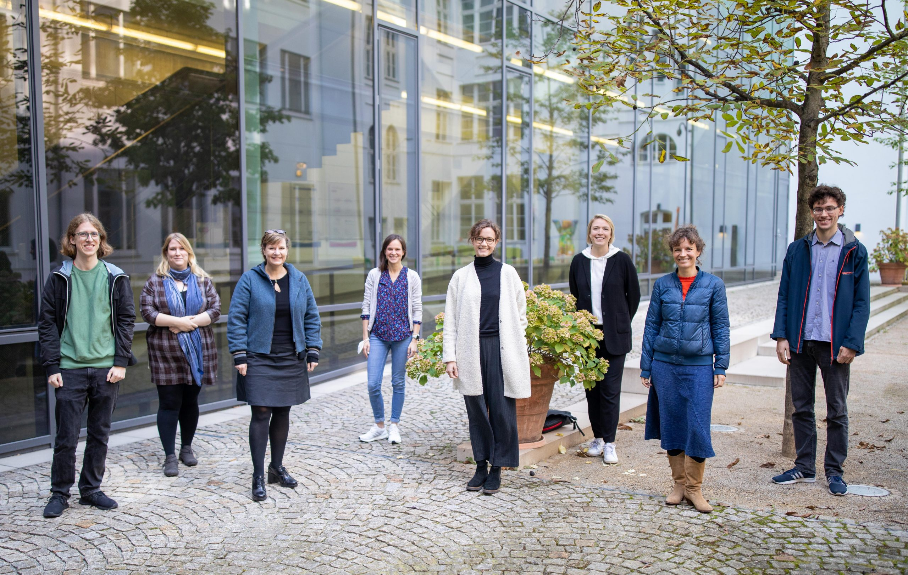
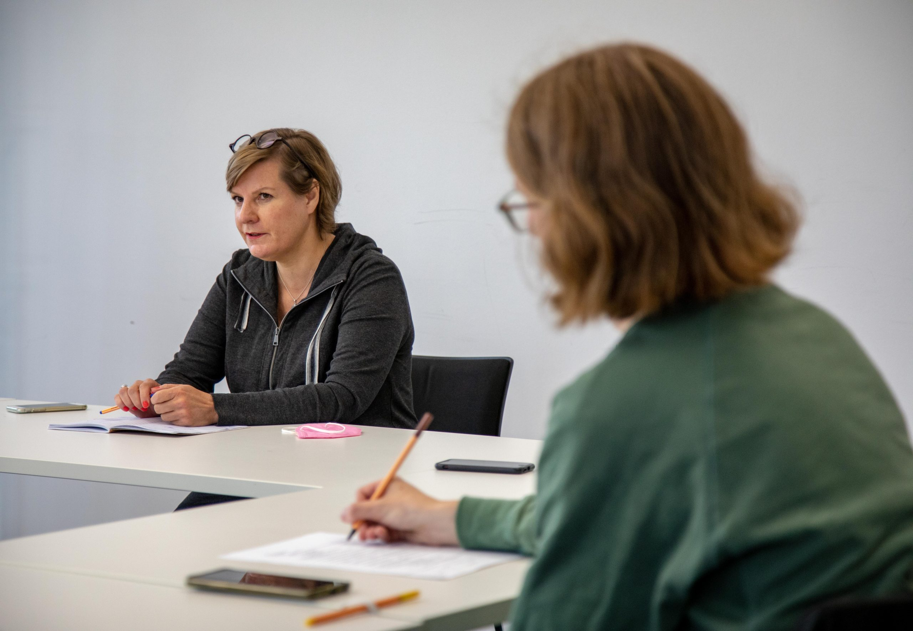
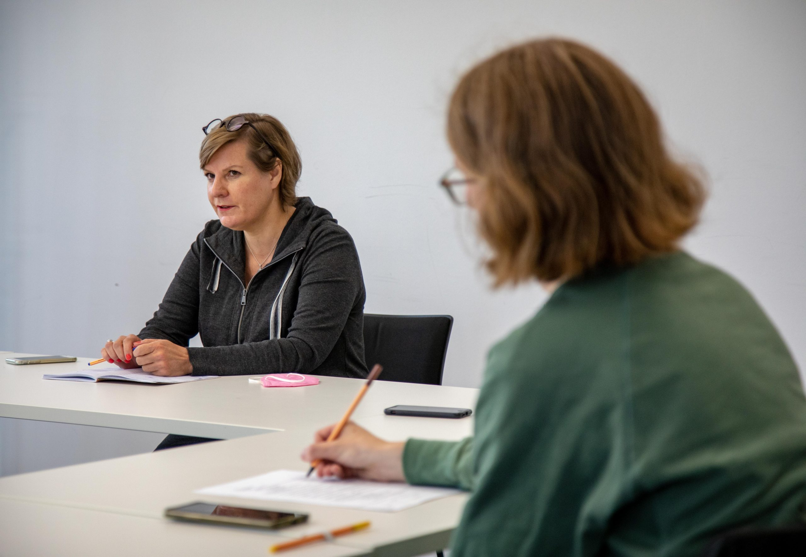

Projekt Partnerschaftliche Gleichstellung BMFSFJ 2021
StartApp Familie
Die „StartApp Familie“ ist ein Beitrag zur partnerschaftlichen Gleichstellung vor allem auf der Paar-Ebene. Die gemeinsam mit dem BMFSFJ entwickelte Web-App richtet sich an junge Erwachsene vor oder in der Familiengründung. Das Tool beinhaltet personalisierte vorausgefüllte To-dos und eine Sharing-Funktion, mit der die To-dos unter den Partner:innen fair und klischeefrei aufgeteilt werden können.
+++ In Umsetzung +++
Die Start App Familie befindet sich derzeit mit Unterstützung eines Work4Germany Fellows in der Umsetzung.
Hintergrund & Herausforderung
Trotz gegenteiliger Überzeugung leben viele junge Erwachsene in ihren Partnerschaften, vor allem nach der Familiengründung, kulturell normative Rollenklischees. Das gefährdet nicht nur die persönliche und berufliche Entwicklung der Individuen und deren Zufriedenheit und Lebensqualität, sondern auch ihre wirtschaftliche Eigenständigkeit. Die langfristigen Folgen wie Armutsrisiken sind den Betroffenen oft nicht bewusst.
Um ein digitales Angebot zu entwickeln, das zu mehr Partnerschaftlichkeit beiträgt, hat sich das Referat 411„Partnerschaftliche Gleichstellungspolitik, Aufwertung sozialer Berufe“ vom BMFSFJ um Teilnahme am Tech4Germany-Fellowship beworben.
Das Angebot soll informierte und reflektierte Entscheidungen über die Rollenaufteilung in Partnerschaften zielgruppengerecht unterstützen. Außerdem war es wichtig, dass auch bereits bestehende Informationen und Entscheidungshilfen eingebunden und neu strukturiert werden.
Ressourcen
Fallstudie
Prozesspapier
Handlungsempfehlungen
OnePager StartApp Familie
GitHub (Code)
LINKS
Prototyp
Aktuelles-Meldung
Tweet-Collection
Gallerie   
 


Vorgehen & Erkenntnisse
Die Herausforderung war am Anfang sehr offen und breit formuliert. Mit 10+ Expert:innen- und 40+ Nutzer:innen-Interviews wurden zunächst Potenziale eines digitalen Tools für verschiedene Zielgruppen identifiziert.
Dabei wurde deutlich, dass Paare meistens partnerschaftlich und gleichgestellt in die Beziehung starten, die Familiengründungsphase aber häufig einen Kipppunkt für die Partnerschaftlichkeit darstellt. Genau dann beginnen Wunsch und Wirklichkeit von Partner:innen auseinanderzuklaffen: die meisten Paare wünschen sich eine partnerschaftliche Aufteilung von Aufgaben rund um Familie, die wenigsten leben diese jedoch auch tatsächlich. Die Nutzer:innen-Interviews schärften diese Erkenntnis dahingehend, dass die Zielgruppe der jungen Erwachsenen an genau dieser Weichenstellung für das Thema Partnerschaftlichkeit besonders gut ansprechbar ist.
So entstand das Ziel, vor allem junge Erwachsene darin zu unterstützen, ihre Wünsche nach mehr Partnerschaftlichkeit schon in der Zeit der Familiengründung zu leben.

LÖSUNG
Wir haben die „StartApp Familie“ entwickelt, eine Web-App, die sich an alle richtet, denen eine Familiengründung oder -erweiterung bevorsteht. Sie bietet Orientierung, Informationen und praktische Unterstützung bei der Erledigung der anstehenden Aufgaben rund um Familie, Beruf, Geld und Bürokratie. Kernstück der Anwendung ist eine personalisierte To-do-Liste, die…
… individuell die auf die Lebenssituation zugeschnittene Aufgaben aufführt,
… bestehende Angebote der Ministerien integriert,
… bei der Entscheidungsfindung unterstützt
und einfach hilft, alle Aufgaben im Blick zu behalten.
Das Besondere ist: Die StartApp Familie ist dank der Sharing-Funktion auch für Paare nutzbar. Hiermit trägt sie zur gemeinsamen Planung bei, schafft einen gleichen, einfachen Zugang zum Wissen und befördert eine klischeefreie Aufgabenteilung zwischen den Partner:innen.


Personalisierte vorausgefüllte To-Do-Liste
Die Nutzer:innen bekommen nur die To-dos angezeigt, die für sie relevant sind. Dafür beantworten sie bei der Einführung wenige einfache Fragen und gelangen dann in ihre persönliche Übersicht der Module mit darin enthaltenen To-dos.
Video 
Partnerschaftlichkeit im Mittelpunkt
Die Praxistipps für mehr Partnerschaftlichkeit in jedem To-do und die Sharing-Funktion („Einladung teilen“) sind besonders wichtig für das Konzept der„StartApp Familie“. So wird in dem Tool mit Selbstverständlichkeiten gearbeitet („nudging“).
Wir empfehlen dem BMFSFJ das Projekt AGIL weiterzuführen – aus folgenden Gründen:
1 Neue Zielgruppe: Junge Erwachsenen vor/in der Familiengründung
Bisher gibt es wenig digitale Angebote vom BMFSFJ, die sich explizit an die jungen Erwachsenen vor/in der Familiengründung richten. Das viel genutzte Familienportal informiert sehr vollumfänglich, aber nicht zielgruppenspezifisch. „StartApp Familie“ richtet sich genau an diese Zielgruppe.
2 Bedarf der Bürger:innen nach Vereinfachung und Personalisierung der Informationen
Die Informationsangebote des BMFSFJ haben den Anspruch, alle Familienkonstellationen abzudecken, was gesamtgesellschaftlich richtig ist, es aber für Einzelpersonen sehr kompliziert macht. Die Bürger:innen haben den Bedarf zu wissen, was genau für sie gilt. Außerdem kann die „StartApp Familie“ in anderen Sprachen genutzt werden. Damit werden sprachliche und kulturelle Barrieren überwunden.
3 Aspekt der Partnerschaftlichkeit bei der Familiengründung
Die bisherigen Angebote richten sich in der Regel entweder an Männer oder an Frauen, adressieren aber kaum die Partner:innen zusammen als Paar. „StartApp Familie“ setzt das Thema Partnerschaftlichkeit explizit als Schwerpunkt.
4 Sehr positives Feedback zum Prototypen
Der Prototyp für „StartApp Familie“ erfüllt die Erwartungen und deckt die Bedarfe der Nutzer:innen ab. Die Nutzer:innenzentrierung wurde durch ein iteratives Vorgehen und Tests mit der Zielgruppe gesichert.
5 Großes Vertrauen in die Angebote vom BMFSFJ
Das BMFSFJ genießt ein großes Vertrauen der Bürger:innen.„StartApp Familie“ als Angebot des Ministeriums hat einen Vertrauensvorschuss im Vergleich zu kommerziellen Angeboten.
Unsere Ergebnisse sind frei verfügbar
Prozesspapier
Detalliertes Vorgehen und Ergebnisse des Projektteams
Download
Handlungsempfehlungen
Empfehlungen an das BMFSFJ zur agilen Weiterführung des Projekts
Download
Prototyp (Demo)
Funktionierender Prototyp „StartApp Familie“
Ausprobieren
Code
Unsere Arbeitsergebnisse als Open Source auf GitHub
StartApp Familie auf GitHub
das Team
 Katja Anokhina \
Product Fellow \
LinkedIn
Katja Anokhina \
Product Fellow \
LinkedIn
 Jonathan Schneider \
Engineering & Product Fellow \
LinkedIn
Jonathan Schneider \
Engineering & Product Fellow \
LinkedIn
 Sophia Grote \
Design Fellow \
LinkedIn
Sophia Grote \
Design Fellow \
LinkedIn
 Malte Laukötter \
Engineering Fellow \
LinkedIn
Malte Laukötter \
Engineering Fellow \
LinkedIn
Projektpartner:innen
Bundesministerium für Familie, Senioren, Frauen und Jugend
 \
Dr. Kirsten Wendland \
Referat 411, Referatsleiterin
\
Dr. Kirsten Wendland \
Referat 411, Referatsleiterin
 \
Alexandra Wend \
Referat 411, Referentin
\
Alexandra Wend \
Referat 411, Referentin
 \
Dr. Nikola Benke \
Referat 411, Referentin
\
Dr. Nikola Benke \
Referat 411, Referentin
 \
Ricarda Skirde \
Referat 411, Praktikantin
\
Ricarda Skirde \
Referat 411, Praktikantin